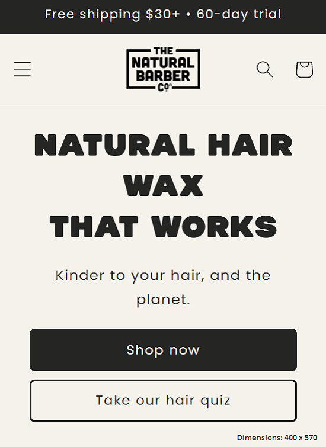
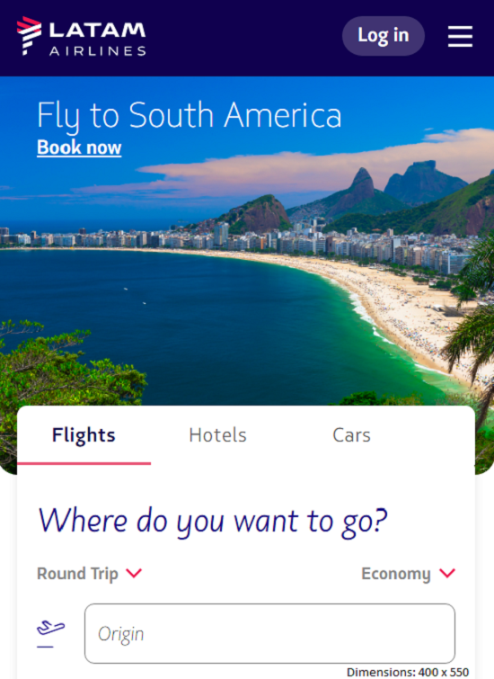
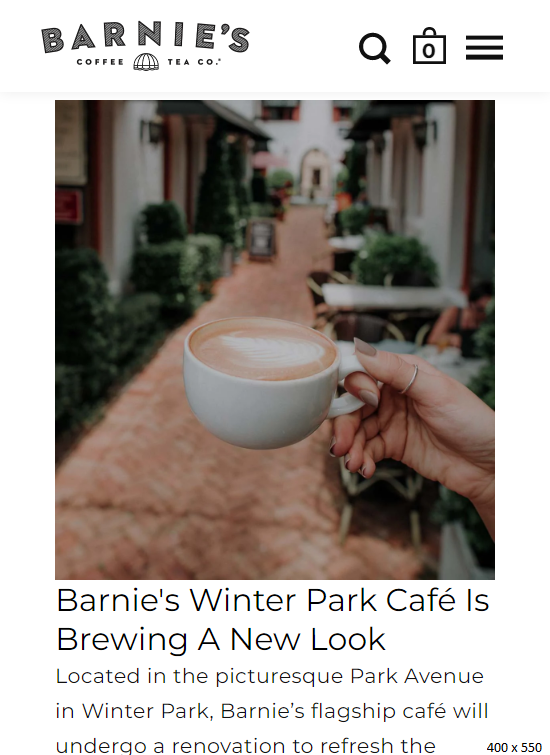

Design Principles Document
Paul Andre A. Bejarano
Repetion
The Natural Barber
naturalbarber.co This page is a great example of Repetition, the form, design, color and symmetry of the title coincide with the letters of its main description: "Natural hair wax that works". The layout of the next paragraph as well as the buttons also match the rest of the page.
Rule of Thirds
Latam Airlines
latamairlines.com/ca/en Latam Airlines shows us a page where the rule of thirds principle is related to the image of a beach and the menu to purchase a flight. If we displayed a grid or lines, the matching points would be the description found in the image, the beach and the entire flight menu section. This design is a great example of balance throughout the page.
Constrast
Barnie's Coffe Tea CO
barniescoffee.com/pages/our-cafe The barnie's coffe page is a great example of contrast. The color of the letters in the title, paragraphs and description contrast with the background of the page, the color of the icons in the menu also contrasts.